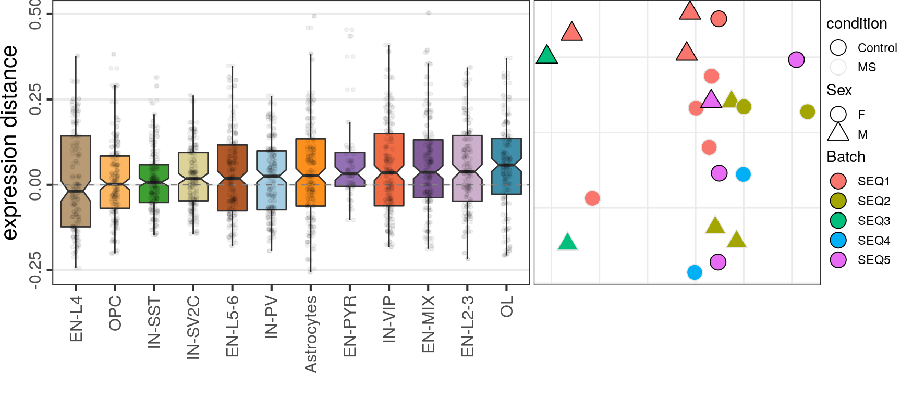

OD
plotMSCovariates <- function(plot.df, metadata) {
plot.df %<>% mutate(Batch=metadata$Seqbatch[sample], Sex=metadata$sex[sample])
ggplot(plot.df) +
geom_point(aes(x=x, y=y, fill=Batch, shape=Sex, color=condition), size=5) +
scale_shape_manual(values=c(21, 24)) +
scale_color_manual(values=c("black", "gray90")) +
guides(fill=guide_legend(override.aes=list(shape=21)),
color=guide_legend(override.aes=list(shape=21))) +
theme_emb
}
sample_meta_ms <- caos$MS$data.object$misc$sample_metadata
sample_meta_ms$sex %<>% {ifelse(. == "female", "F", "M")}
Top-100
caos$MS$estimateExpressionShiftMagnitudes(
verbose=FALSE, top.n.genes=100, min.samp.per.type=4, gene.selection="od", name='es.od.100'
)gg_es_100 <- caos$MS$plotExpressionShiftMagnitudes(ylab="expression distance", name='es.od.100')
gg_mds_100 <- caos$MS$plotSampleDistances(show.sample.size=FALSE, name='es.od.100')$data %>%
plotMSCovariates(metadata=sample_meta_ms)
plot_grid(gg_es_100, gg_mds_100, align="vh", axis="tb", rel_widths=c(1, 0.7))
Top-500
caos$MS$estimateExpressionShiftMagnitudes(
verbose=FALSE, top.n.genes=500, name='es.od.500', min.samp.per.type=4, gene.selection="od"
)gg1 <- caos$MS$plotExpressionShiftMagnitudes(ylab="expression distance", name='es.od.500')
gg2 <- caos$MS$plotSampleDistances(show.sample.size=FALSE, name='es.od.500')$data %>%
plotMSCovariates(metadata=sample_meta_ms)
plot_grid(gg1, gg2, align="vh", axis="tb", rel_widths=c(1, 0.7))
Run scITD
library(scITD)
cm_joint <- caos$MS$getJointCountMatrix() %>% t()
cell_meta <- caos$MS$data.object$misc$cell_metadata %>% as.data.frame() %$%
set_rownames(.[,c(5:14, 21)], cell) %>%
rename(donors=sample, ctypes=cellType) %>%
mutate(donors=as.factor(donors), ctypes=as.factor(ctypes))
# scITD filters samples severely if some cell types miss them. So, we focus only on
# highly represented cell types.
used_types <- c("Astrocytes", "EN-L2-3", "EN-L4", "EN-L5-6", "IN-PV", "IN-SST",
"IN-SV2C", "IN-VIP", "OL", "OPC")param_list <- initialize_params(ctypes_use=used_types, ncores=30, rand_seed=10)
container <- make_new_container(
params=param_list,
count_data=cm_joint[,rownames(cell_meta)],
meta_data=cell_meta
)
container %<>% form_tensor(
donor_min_cells=5, norm_method='trim', scale_factor=10000, vargenes_method='norm_var_pvals',
vargenes_thresh=.5, scale_var=TRUE, var_scale_power=2
)
print(length(container[["all_vargenes"]]))[1] 2746ranks <- c(5, 6)
container %<>% run_tucker_ica(ranks=ranks, tucker_type='regular', rotation_type='hybrid')
test_vars <- c('sex', 'diagnosis', 'region', 'Capbatch', 'Seqbatch', 'PMI')
container %<>% get_meta_associations(vars_test=test_vars, stat_use='pval')
container %<>% plot_donor_matrix(meta_vars=test_vars, show_donor_ids = TRUE,
add_meta_associations='pval')
container$plots$donor_matrix
sex_related_scores <- get_one_factor(container, factor_select=4)[[2]] %>% rowMeans() %>% abs() %>%
sort(decreasing=TRUE)
batch_related_scores <- lapply(c(2, 5), function(fi) {
get_one_factor(container, factor_select=fi)[[2]] %>% abs() %>%
{setNames(matrixStats::rowMedians(.), rownames(.))} %>%
sort(decreasing=TRUE)
})
Compile supp. figure
ggs_od_es <- list(gg_es_100, gg_es_500_sex, gg_es_500_batch) %>% lapply(`+`, theme(
axis.text.x=element_text(size=9), axis.text.y=element_text(size=9),
axis.title.y=element_text(size=11), plot.margin=margin(), axis.title.x=element_blank()
)) %>% rasterise(dev="ragg_png")
leg_guide <- function(...) guide_legend(
title.position="top", direction="horizontal", nrow=3,
keywidth=unit(1, "pt"), keyheight=unit(1, "pt"), ...
)
ggs_mds_es <- list(gg_mds_100, gg_mds_500_sex, gg_mds_500_batch) %>% lapply(`+`, theme(
legend.text=element_text(size=7), legend.title=element_text(size=9), legend.position="bottom",
legend.margin=margin(), legend.box.margin=margin()
)) %>%
lapply(`+`, guides(fill=leg_guide(override.aes=list(shape=21)), shape=leg_guide(),
color=leg_guide(override.aes=list(shape=21)))
)
gg <- plot_grid(
plot_grid(
rasterise(gg_pf_comp_s, dev="ragg_png"),
gg_coda_mds + theme(plot.margin=margin(t=20, r=20, b=20)),
ncol=1, rel_heights=c(2, 1.5)
),
plot_grid(
plotlist=c(ggs_od_es, ggs_mds_es),
byrow=FALSE,
ncol=2, align="h", axis="tb", rel_widths=c(1, 0.7),
scale=0.95
),
ncol=2, rel_widths=c(1.25, 2)
)
grDevices::cairo_pdf(figurePath("4s_heterogeneity.pdf"), width=8.5, height=9)
gg
tr <- dev.off();
gg
sessionInfo()R version 4.0.3 (2020-10-10)
Platform: x86_64-pc-linux-gnu (64-bit)
Running under: Ubuntu 18.04.6 LTS
Matrix products: default
BLAS: /usr/local/R/R-4.0.3/lib/R/lib/libRblas.so
LAPACK: /usr/local/R/R-4.0.3/lib/R/lib/libRlapack.so
Random number generation:
RNG: L'Ecuyer-CMRG
Normal: Inversion
Sample: Rejection
locale:
[1] C
attached base packages:
[1] stats graphics grDevices utils datasets methods base
other attached packages:
[1] scITD_1.0.0 cacoaAnalysis_0.1.0 dataorganizer_0.1.0
[4] ggrastr_1.0.1 sccore_1.0.1 cacoa_0.2.0
[7] cowplot_1.1.1 conos_1.4.4 igraph_1.2.6
[10] Matrix_1.2-18 magrittr_2.0.1 forcats_0.5.1
[13] stringr_1.4.0 dplyr_1.0.7 purrr_0.3.4
[16] readr_1.4.0 tidyr_1.1.4 tibble_3.1.5
[19] ggplot2_3.3.5 tidyverse_1.3.0 workflowr_1.6.2
loaded via a namespace (and not attached):
[1] utf8_1.2.2 reticulate_1.22 R.utils_2.10.1
[4] tidyselect_1.1.1 grid_4.0.3 Rtsne_0.15
[7] devtools_2.3.2 munsell_0.5.0 ica_1.0-2
[10] codetools_0.2-16 ragg_0.4.1 withr_2.4.2
[13] colorspace_2.0-2 highr_0.9 knitr_1.36
[16] rstudioapi_0.13 stats4_4.0.3 ggsignif_0.6.1
[19] pbmcapply_1.5.0 labeling_0.4.2 git2r_0.27.1
[22] urltools_1.7.3 mnormt_2.0.2 polyclip_1.10-0
[25] farver_2.1.0 rprojroot_2.0.2 Matrix.utils_0.9.8
[28] vctrs_0.3.8 generics_0.1.0 xfun_0.26
[31] R6_2.5.1 doParallel_1.0.16 ggbeeswarm_0.6.0
[34] clue_0.3-59 locfit_1.5-9.4 cachem_1.0.6
[37] assertthat_0.2.1 promises_1.1.1 scales_1.1.1
[40] beeswarm_0.4.0 gtable_0.3.0 processx_3.4.5
[43] drat_0.1.8 rlang_0.4.11 systemfonts_1.0.0
[46] Rmisc_1.5 GlobalOptions_0.1.2 splines_4.0.3
[49] rstatix_0.7.0 broom_0.7.9 brew_1.0-6
[52] yaml_2.2.1 reshape2_1.4.4 abind_1.4-5
[55] modelr_0.1.8 backports_1.2.1 httpuv_1.5.4
[58] tools_4.0.3 usethis_1.6.3 psych_2.1.6
[61] ellipsis_0.3.2 jquerylib_0.1.4 RColorBrewer_1.1-2
[64] coda.base_0.3.1 BiocGenerics_0.36.1 sessioninfo_1.1.1
[67] Rcpp_1.0.7 plyr_1.8.6 ps_1.4.0
[70] prettyunits_1.1.1 ggpubr_0.4.0 dendsort_0.3.3
[73] GetoptLong_1.0.5 S4Vectors_0.28.1 grr_0.9.5
[76] haven_2.4.1 ggrepel_0.9.1 cluster_2.1.0
[79] fs_1.5.0 data.table_1.14.2 openxlsx_4.2.3
[82] circlize_0.4.13 triebeard_0.3.0 reprex_0.3.0
[85] tmvnsim_1.0-2 whisker_0.4 matrixStats_0.61.0
[88] pkgload_1.2.1 hms_1.1.1 evaluate_0.14
[91] rio_0.5.26 RMTstat_0.3 readxl_1.3.1
[94] N2R_0.1.1 IRanges_2.24.1 gridExtra_2.3
[97] shape_1.4.6 testthat_3.0.0 compiler_4.0.3
[100] crayon_1.4.1 R.oo_1.24.0 htmltools_0.5.2
[103] rTensor_1.4.8 mgcv_1.8-33 later_1.1.0.1
[106] lubridate_1.7.9.2 DBI_1.1.1 tweenr_1.0.1
[109] dbplyr_2.0.0 pagoda2_1.0.7 ComplexHeatmap_2.9.4
[112] MASS_7.3-53 car_3.0-10 cli_3.0.1
[115] R.methodsS3_1.8.1 parallel_4.0.3 pkgconfig_2.0.3
[118] foreign_0.8-80 xml2_1.3.2 foreach_1.5.1
[121] vipor_0.4.5 leidenAlg_0.1.0 rvest_0.3.6
[124] callr_3.5.1 digest_0.6.28 rmarkdown_2.11
[127] cellranger_1.1.0 Rook_1.1-1 edgeR_3.32.1
[130] curl_4.3.2 rjson_0.2.20 lifecycle_1.0.1
[133] nlme_3.1-149 jsonlite_1.7.2 carData_3.0-4
[136] limma_3.46.0 desc_1.3.0 fansi_0.5.0
[139] pillar_1.6.3 lattice_0.20-41 fastmap_1.1.0
[142] httr_1.4.2 pkgbuild_1.1.0 glue_1.4.2
[145] remotes_2.2.0 zip_2.2.0 png_0.1-7
[148] iterators_1.0.13 ggforce_0.3.2 stringi_1.7.5
[151] textshaping_0.2.1 memoise_2.0.0 irlba_2.3.3
[154] ape_5.5